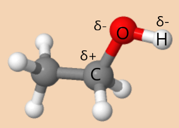
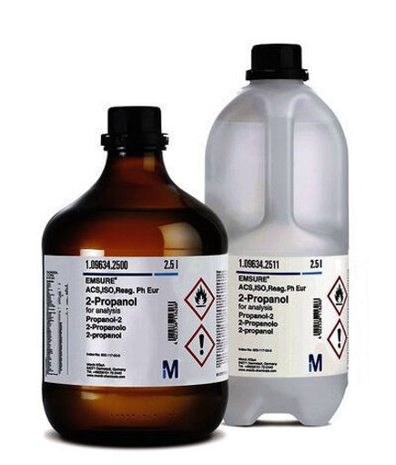

Historia
El etanol, un alcohol ampliamente utilizado en bebidas alcohólicas, tiene una historia que se remonta a miles de años. Desde el descubrimiento de la fermentación, ha sido producido a través de la descomposición de azúcares en materiales orgánicos por levaduras y bacterias. Con el desarrollo de la destilación en el siglo IX d.C., se logró aumentar su concentración y expandir su uso. Desde entonces, el etanol ha desempeñado diversos roles, desde bebidas alcohólicas hasta combustibles y productos industriales. En tiempos más recientes, su importancia ha crecido como fuente de energía renovable para reducir la dependencia de los combustibles fósiles y mitigar el impacto ambiental..

Aplicaciones
El etanol, también conocido como alcohol etílico, es un compuesto químico altamente versátil con una amplia gama de aplicaciones en diversos sectores. Una de las aplicaciones más destacadas del etanol es su uso como aditivo en combustibles, como la gasolina, con el objetivo de reducir las emisiones contaminantes y promover la sostenibilidad energética. Además, el etanol es un componente clave en la producción de bebidas alcohólicas, ya que se obtiene a través de la fermentación de azúcares presentes en frutas, granos y otros productos vegetales. En la industria farmacéutica, el etanol se utiliza como disolvente para la fabricación de medicamentos, tinturas y extractos herbales, así como vehículo para la administración oral de ciertos fármacos. Sus propiedades solubles y su capacidad de extraer compuestos químicos lo hacen un recurso valioso en esta área. Además, el etanol es un componente clave en la producción de desinfectantes y productos de limpieza, gracias a sus propiedades antimicrobianas, lo que lo convierte en una herramienta esencial para la higiene y prevención de enfermedades. En la industria cosmética y de cuidado personal, el etanol se utiliza en la fabricación de perfumes, lociones y productos para el cabello, actuando como solvente, conservante y agente astringente. Por último, el etanol encuentra aplicaciones en la industria química como reactivo y disolvente en la fabricación de productos químicos, como ésteres, éteres, plásticos, resinas, adhesivos, pinturas, tintas y recubrimientos. En resumen, el etanol es un compuesto químico con múltiples aplicaciones que abarcan desde el ámbito energético hasta el farmacéutico, pasando por la industria alimentaria, cosmética y química, destacando su importancia como combustible, componente de bebidas alcohólicas, disolvente y agente antimicrobiano, entre otros usos.

En este video mostrare la forma en la que hice la molecula "Etanol" en el software Avogadro y tambien se mostrara los valores de energia en distintos campos de fuerza como UFF, GAFF, MMFF94s y MMFF94 y sus respecttivas medidas y angulos entre moleculas
| Campo de fuerza |
Energia(KJ/mol |
| UFF |
17,3294 |
| GAFF |
6,58632 |
| MMFF94s |
-6,35178 |
| MMFF94 |
-635178 |
En esta tabla se pueden ver los valores de la energia del etanol en distintos campos
de fuerza, en la grafica se compara de forma un poco mas precisa los cambios
de energia siendo el campo de fuerza donde la molecula se encuentra mas estable
el MMFF94s y MMFF94 ya que en ambos se presenta el mismo valor de energia
Campos de fuerza
| Enlaces |
UFF |
MMFF94 |
MMFF94s |
GAFF |
| O-H6 |
0,992Å |
0,972Å |
0,972Å |
0,975Å |
| C2-O |
1,400Å |
1,420Å |
1,420Å |
1,428Å |
| C1-C2 |
1,521Å |
1,514Å |
1,514Å |
1,537Å |
| C1-H3 |
1,111Å |
1,095Å |
1,095Å |
1,093Å |
| Angulo |
UFF |
MMFF94 |
MMFF94s |
GAFF |
| C1-C2-O |
109,4º |
109,0º |
109,0º |
109,5º |
| H6-O-C2 |
106,0º |
107,1º |
107,1º |
108,5º |
| C1-C2-H5 |
106,7º |
110,5º |
110,5º |
109,6º |
Medidas y angulos
En estas tablas vemos los angulos y medidas entre atomos en cada campo de fuerza, donde podemos ver que la medida mas pequeña entre atomos se presenta entre el oxigeno y un hidrogeno en MMFF94 y MMFF94s, con una distancia de 0,972Å igualmente en este campo de fuerza cuenta con las medidas mas cortas a diferencia de los demas campos, pero no tiene mucha diferencia de angulos con cambios casi minusculos donde el cambio mas notable es en el agulo formado por C1-C2-H5 entre el campo de fuerza UFF y GAFF
El campo de fuerza MMFF94s (Merck Molecular Force Field 94s) y MMFF94 (Merck Molecular Force Field 94) son campos de fuerza utilizados en la química computacional para modelar las interacciones entre átomos en moléculas. Estos campos de fuerza se basan en principios físicos y consideran diferentes parámetros, como la geometría molecular, las cargas parciales de los átomos y los términos de energía potencial.
El etanol es una molécula compuesta por un grupo hidroxilo (-OH) unido a un grupo metilo (-CH3). Al aplicar el campo de fuerza MMFF94s o MMFF94, se consideran las interacciones y los parámetros específicos que están diseñados para capturar la estabilidad y las propiedades moleculares del etanol.
La estabilidad del etanol en el campo de fuerza MMFF94s y MMFF94 puede atribuirse a la forma en que estos campos de fuerza modelan las interacciones entre los átomos y los grupos funcionales presentes en el etanol. Estos campos de fuerza han sido parametrizados y ajustados para representar adecuadamente las interacciones de van der Waals, las interacciones electrostáticas y otras fuerzas presentes en las moléculas.
Es importante tener en cuenta que la estabilidad de una molécula en un campo de fuerza específico depende de la calidad y precisión de los parámetros y términos utilizados en el campo de fuerza. Existen diferentes campos de fuerza disponibles, y la elección del campo de fuerza adecuado dependerá del sistema molecular específico y del objetivo del estudio o simulación en particular.
El etanol, también conocido como alcohol etílico o alcohol etanol, es una molécula compuesta por dos átomos de carbono, cinco átomos de hidrógeno y un átomo de oxígeno. Es una sustancia química importante y ampliamente utilizada en diversas aplicaciones, como solvente, combustible y ingrediente en la fabricación de productos farmacéuticos, cosméticos y bebidas alcohólicas.
La estructura del etanol presenta dos grupos funcionales clave. En primer lugar, contiene un grupo hidroxilo (-OH), que consiste en un átomo de oxígeno unido covalentemente a un átomo de hidrógeno. Este grupo hidroxilo confiere propiedades características a la molécula, como su polaridad y capacidad para formar enlaces de hidrógeno. Estas características son importantes para su solubilidad en agua y su participación en reacciones químicas.
En segundo lugar, el etanol posee un grupo alquilo (-CH3) denominado grupo metilo. Este grupo alquilo está compuesto por un átomo de carbono unido a tres átomos de hidrógeno. El grupo metilo proporciona una porción no polar a la molécula, lo que influye en sus propiedades físicas y su capacidad para disolverse en compuestos orgánicos no polares.
Estos grupos funcionales, el hidroxilo y el metilo, determinan las propiedades químicas y físicas del etanol. La presencia del grupo hidroxilo permite que el etanol forme enlaces de hidrógeno con otras moléculas, lo que le confiere su capacidad para disolverse en agua y actuar como solvente polar. Por otro lado, el grupo metilo aporta una parte apolar a la molécula, lo que influye en su solubilidad en compuestos orgánicos no polares y en su interacción con otras moléculas en sistemas químicos y biológicos.
En resumen, el etanol es una molécula que contiene un grupo hidroxilo y un grupo metilo, lo que le confiere una combinación única de propiedades químicas y físicas. Estos grupos funcionales desempeñan un papel fundamental en su comportamiento químico, su solubilidad y sus interacciones con otras sustancias.